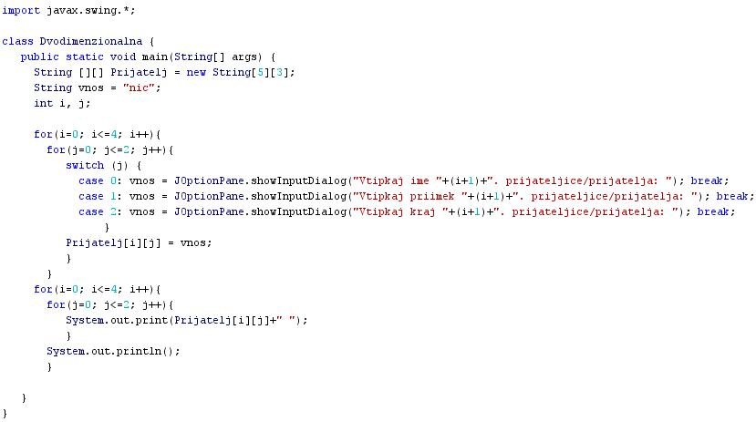

ITERACIJA ALI PONAVLJANJE
- Nizko strukturirani programi so pogosto sestavljeni iz enostavnih struktur nadzora poteka programa.
- Enostavne strukture nadzora poteka programa so sekvenca ali zaporedje, selekcija ali izbira ter iteracija ali ponavljanje.
- Iteracija ali repeticija je programska struktura, ki omogoèa ponavljanje izvajanja enega ukaza ali bloka ukazov.
- Ukaz ali blok ukazov se izvaja toliko èasa, dokler ni postavljeni pogoji izpolnjen.
- V programskem jeziku Java so stavki, ki omogoèajo ponavljanje, repeticijo ali iteracijo "while", "do-while" in "for".
- Primer:
- Besedni opis problema in rešitve.
- "Zapiši program, ki bo inicializiral dvodimenzionalno tabelo. Ta naj vsebuje 5 vrstic in tri stolpce. Program naj omogoèi vpis imen, priimkov in krajev bivanja petih prijateljev ali prijateljic v inicializirano dvodimenzionalno tabelo.": Vprašamo se, kaj vse bomo morali postoriti za rešitev problema in to opišemo v nekaj stavkih. Potek reševanja problema poskusimo premisliti èim bolj natanèno.
- Inicializiraj dvodimenzionalno tabelo "Prijatelj", ki ima pet vrstic in tri stolpce.
- Uporabi prvo zanko za vpis podatkov v tabelo s števcem, ki bo tekel od 0 do 4 s korakom 1. To bo števec vrstic dvodimenzionalne tabele.
- Znotraj prve zanke uporabi drugo zanko s števcem, ki bo tekel od 0 do 2 s korakom 1. To bo števec stolpcev dvodimenzionalne tabele. Ob vsakem preletu zanke naj program pozove uporabnika k vnosu novega imena, nato priimka in konèno še kraja bivanja prijatelja v trenutno vrstico tabele.
- Sedaj uporabi tretjo zanko za izpis podatkov s števcem, ki bo tekel od 0 do 4 s korakom 1. To bo števec vrstic dvodimenzionalne tabele.
- Znotraj tretje zanke uporabi še eno zanko s števcem, ki bo tekel od 0 do 2 s korakom 1. To bo števec stolpcev dvodimenzionalne tabele. Ob vsakem preletu zanke naj program izpiše vrednost imena, nato priimka in konèno še kraja bivanja v posamezni vrstici.
VAJA 50:
- V okolju za pisanje izvorne kode v jeziku Java, za prevajanje in za interaktivno delo zapiši program "DvodimezionalnaTabela". Pomagaj si s sliko.
- Kodo lahko tudi kopiraš iz te datoteke in jo prilepiš v okolje, v katerem pišeš programèke. Pozor: koda, ki jo boš kopiral/a, vsebuje eno, dve, tri ali štiri napake. Èe želiš, da bo program deloval, moraš napake odkriti in jih odpraviti.
- Izvorno kodo shrani pod imenom "ImePriimek50.java". ImePriimek je seveda tvoje lastno ime in priimek.
- Datoteko "ImePriimek50.java" prevedi.
- Prevedeno datoteko zaženi, preveri rezultat v interaktivnem oknu in poklièi profesorja, da vidi rezultat.
- Sam/a skonstruiraj diagram poteka v tej uèni enoti in ga nariši v zvezek.
1. Vprašanja:
1. Kaj omogoèa iteracija pri strukturiranem programiranju?
2. Naštej ukaze, ki omogoèajo iteracijo pri programskem jeziku Java.
3. Kakšna je še ena tuja beseda in kakšna je slovenska beseda za iteracijo?
4. Kakšna je razlika med zanko "while" in zanko "do-while"? Kako se ta razlika pokaže pri izvajanju programa? Pomagaj si z uènimi enotami 22, 23, 24.
5. Kakšna je razlika med zanko "while" in zanko "do-while" na eni strani ter zanko "for" na drugi strani? Kako se ta razlika pokaže pri izvajanju programa? Pomagaj si z uènimi enotami 22, 23, 24.
6. Koliko primerov sekvence je moè najti v programu v tej uèni enoti? Zapiši ukaze, ki te primere predstavljajo.
7. Koliko primerov selekcije je moè najti v programu v tej uèni enoti? Zapiši ukaze, ki te primere predstavljajo.
8. Koliko primerov iteracije je moè najti v programu v tej uèni enoti? Zapiši ukaze, ki te primere predstavljajo.
9. Koliko zank se skriva v kodi programa te uène enote?
10. Kakšna je naloga posamezne zanke v programu te uène enote?
2. Zapiši od ene do pet kljuènih besed, ki povzemajo vsebino te uène enote.
3. Povezave do dodatnih informacij.
Spletni priroènik proizvajalca programskega okolja Java. To je podjetje Sun.
|